1. Evidence of Evolution
2. Phylogenetic Trees
3. History of the Evolution of Life on Earth
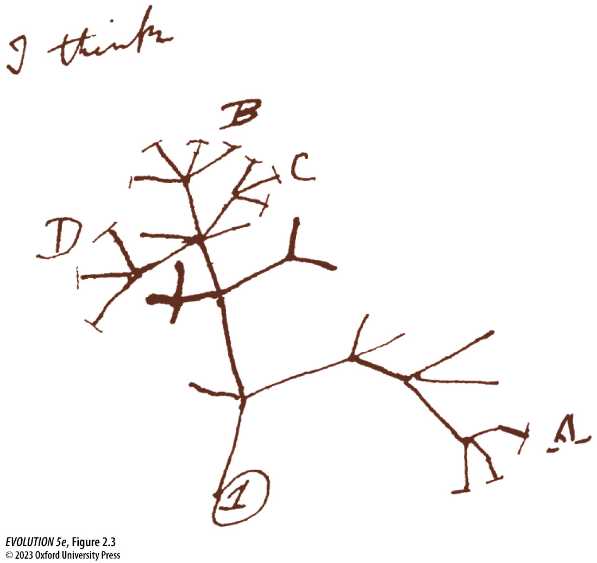
Common Ancestry:
Darwin extrapolated from the relationships among organisms like finches with similar morphologies, to relationships among major orders, to relationships among phyla, all the way to the idea of a universal common ancestor.
Most Recent Common Ancestor (MRCA):
All organisms share a most common ancestor at some time in their evolutionary history, representing the ancestor from which they diverged. Closely related species have more recent common ancestors than more distant relatives.
Phylogeny:
A tree-like structure representing the evolutionary relationships of organisms related by common ancestry. A phylogeny should be read from the tips towards the root. Those sharing more recent common ancestors are more closely related.
Homology (homologous):
Inherited from a common ancestor.
Convergent (convergence):
Independently derived (not inherited from a common ancestor).
Darwin proposed that organisms descend from shared common ancestors, and that all organisms descended from a long-past universal common ancestor (LUCA). There is now overwhelming evidence to support this. The key evidence of common ancestry is homology, the inheritance of ancestral features that become modified in descendants.
Homology is abundantly evident in the fossil record as gradual changes over time among descendant lineages from a common ancestor's phenotype. Similarly, homology is evident in the features of extant organisms in the similarity of structures among organisms despite differences in function
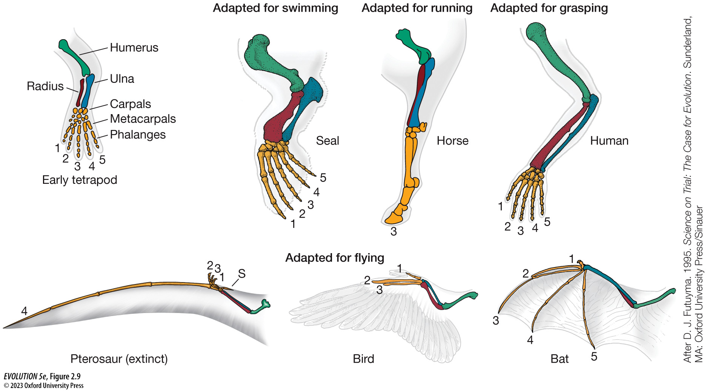
The genome is a molecular encoding of huge amounts of information and each site or gene represents a homologous character inherited from a common ancestor. Close relatives have had less time for mutations (modifications) to occur since diverging from a common ancestor, while more distant relatives have had more time to accumulate differences. These differences underlie their many morphological and functional differences.
Both within the fossil record, and using inferred phylogenetic relationship among extant organisms, we can study patterns of trait evolution.
Given the process of common ancestry, we expect organisms to diverge over time from each other and from their common ancestral phenotype. But diverge in what ways? Random evolution among descendant lineages is unlikely to have given rise to the diversity of organisms we see today, particularly in terms of their apparent fit to their environments. Instead, evidence of Darwin's other main thesis, natural selection, is abundantly evident in nature through patterns of trait evolution.
A key signature of natural selection is patterns of repeated evolution of similar structures representing repeated adaptations to similar selection pressures.
Famous examples of parallel evolution involve the repeated evolution of similar ecological traits among geographically isolated species of Anolis Lizards on different Carribean islands, or of Viburnum plants in disjunct montane cloud forests. Here the same homologous traits evolved similar character states repeatedly, and in ways that were correlated with their environment.
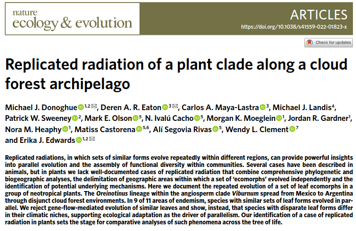
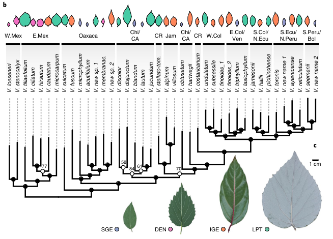
By contrast, many organisms also exhibit convergent evolution, where similar functions/traits evolve from non-homologous origins.
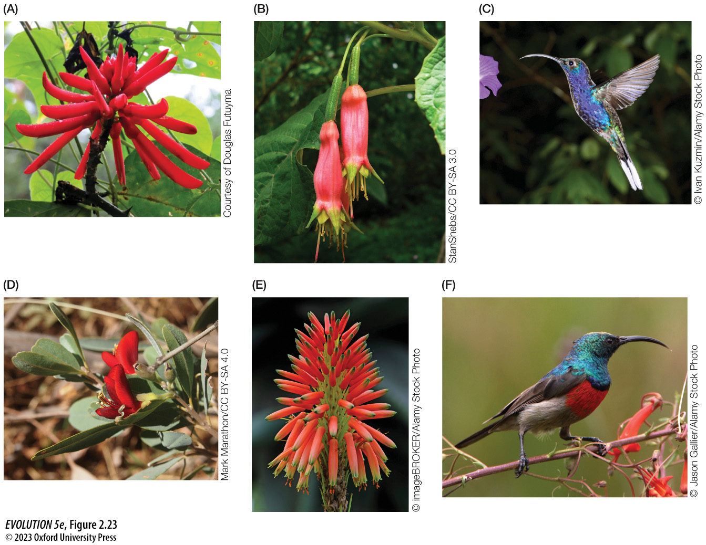
The concept of homology is clearly defined, however, identifying homology among biological structures can in some cases be quite challenging. For example, although the genetic and developmental basis by which eyes evolved in cephalopods versus vertebrates are very different, it has also been found that they share some homologous genetic basis.
For example, genes involved in light capture trace all the way back to single-celled archeael ancestors. Thus, deep homology at this very ancient level may still have influenced their likelihood of evolving these convergent features. This idea will be revisited in the topic of evolutionary development later in class.
Since Darwin's publication scientists have amassed abundant evidence for
evolution.
(1) The fossil record provides clear and irrefutable evidence of common ancestry and adaptations. The order in which major lineages of life arise in the fossil record and their timing is uniform across the globe.
(2) Experimental studies of fast-living organisms have allowed us to observe evolution in action, providing evidence of descent with modification and adaptations in organisms such as bacteria, yeast, and in our many natural observations of the evolution of herbicide, insecticide, and antibiotic resistance.
(3) Finally, comparative studies of living taxa provide ample evidence of evolution by fitting with expectations of models of evolution. See Box
2.3 of your textbook. Homology, Vestigial characters, Development,
Convergence, Suboptimal design, etc.
"It is impossible to really understand evolution without an ability to accurately interpret phylogenetic trees" (Bob O'Hara)
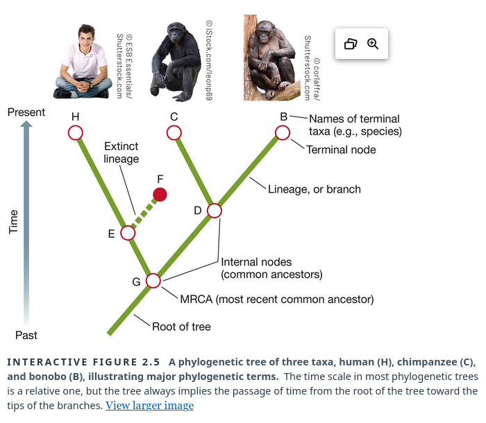
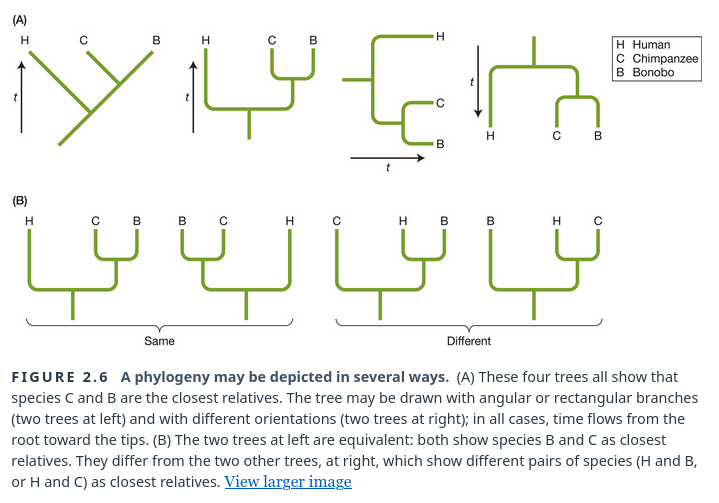
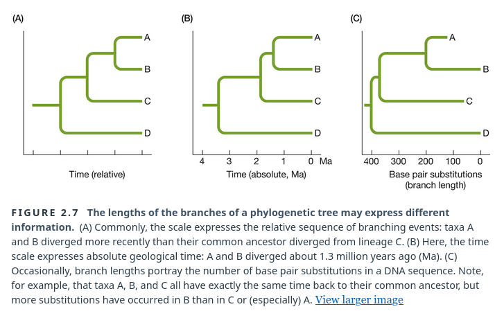
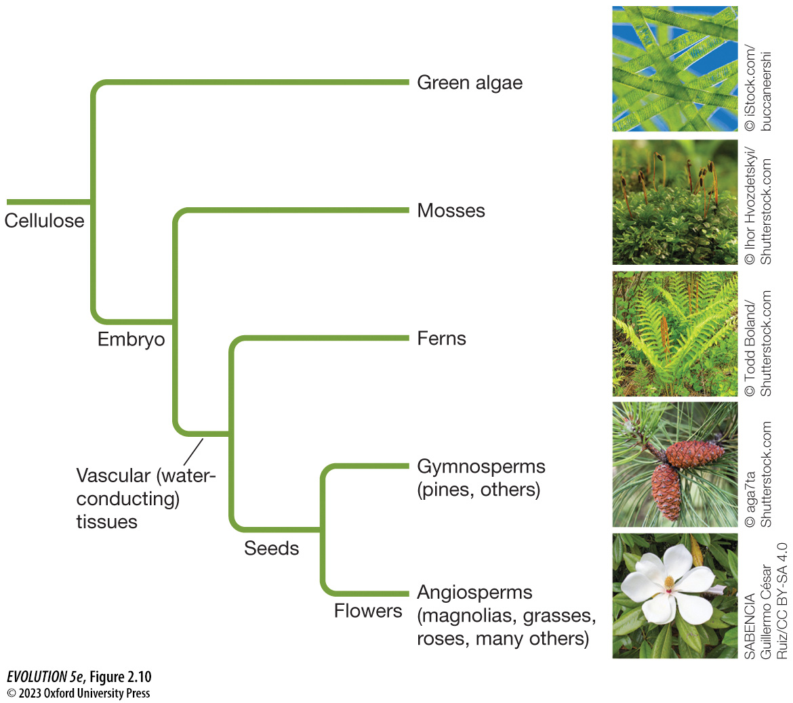
One goal of phylogenetics is to infer the tree-of-life -- a phylogeny for all extant species. However, this is not the only goal of phylogenetics, instead there are countless subfields, disciplines, and applications of
phylogenetics.
Examples include topics like naming lineages on trees (taxonomy); advancing statistical models of DNA subsitutions (molecular phylogenetics); improving computational efficiency of tree inference algorithms (computational phylogenetics); refining divergence time estimates using fossil calibrations (paleo or relaxed clock phylogenetics); investigating non-bifurcating patterns arising from hybridization (phylogenetic network inference); investigating the consequences of gene duplication and loss (comparative and functional genomics); tracking dispersal and spread of organisms by
ancestry (phylodynamics); and many many more topics concerning phylogenetic trees.
Phylogenetic trees are not just images of species relationships, but in
fact represent a data structure on which evolution can be modeled/studied.
This includes information of hierarchical relationships, measures of
divergence (edge lengths), confidence values (supports), and possibly
additional meta-data.
- Patterns of discrete and continuous trait evolution can be modeled on trees.
- Rates of diversification through time can be inferred from trees.
- Models combining both of these features can test macro-evolutionary
hypotheses, such as whether a particular trait state affects rates
of diversification.
Modeling differences at homologous character states
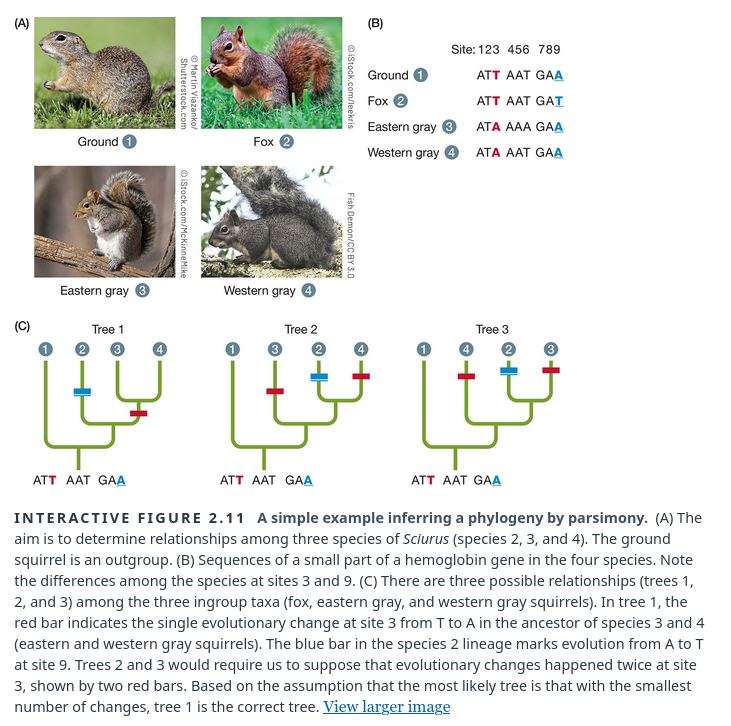
Inferring the past from observations at the present
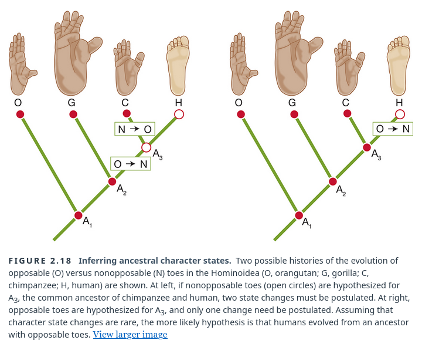
Inferring the time scale of evolution (independent of or alongside fossils)
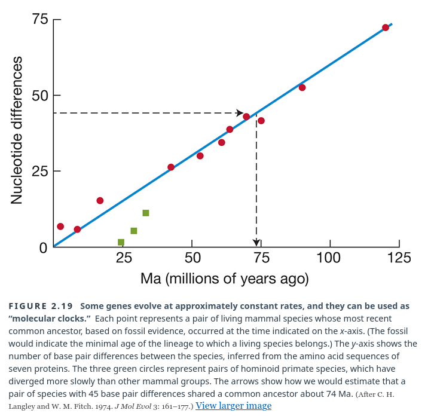
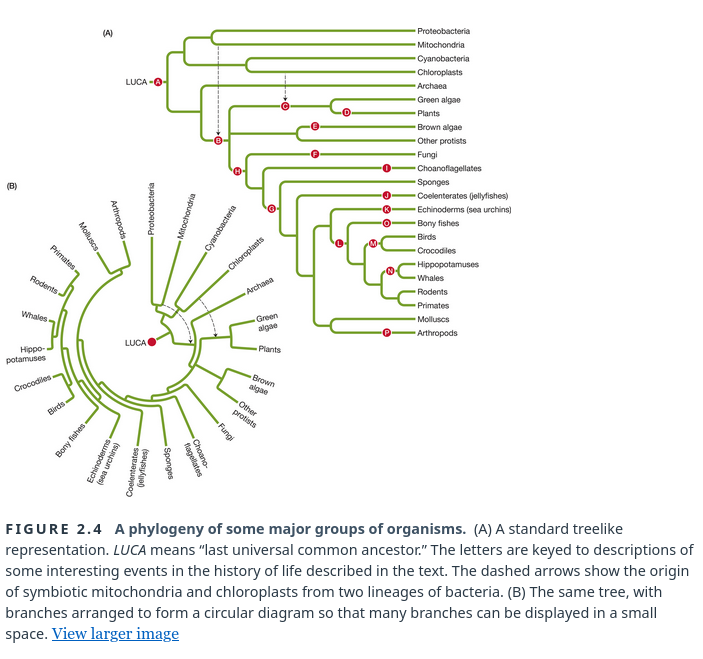
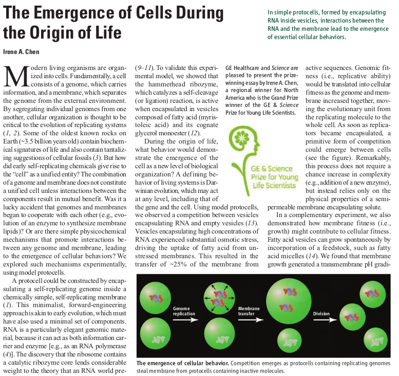
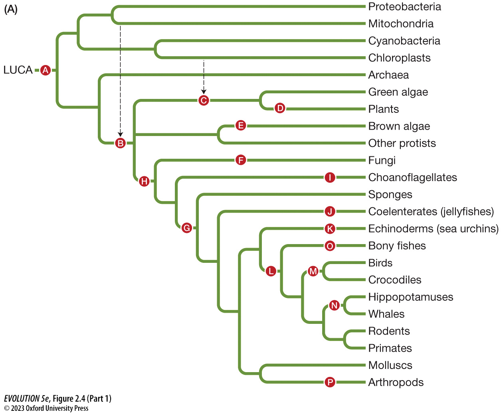